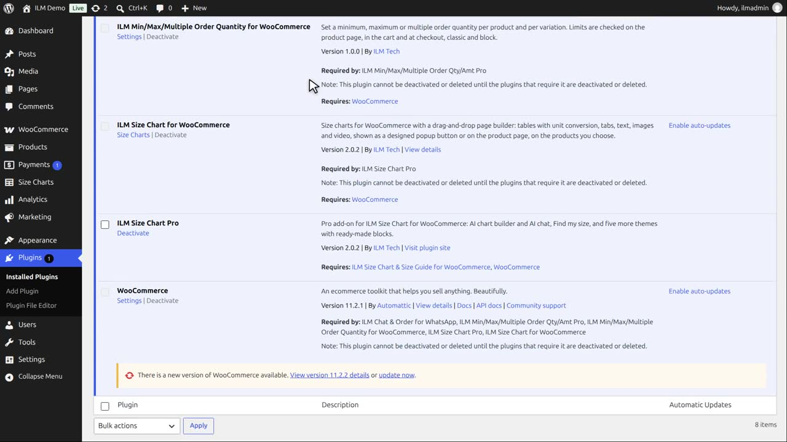
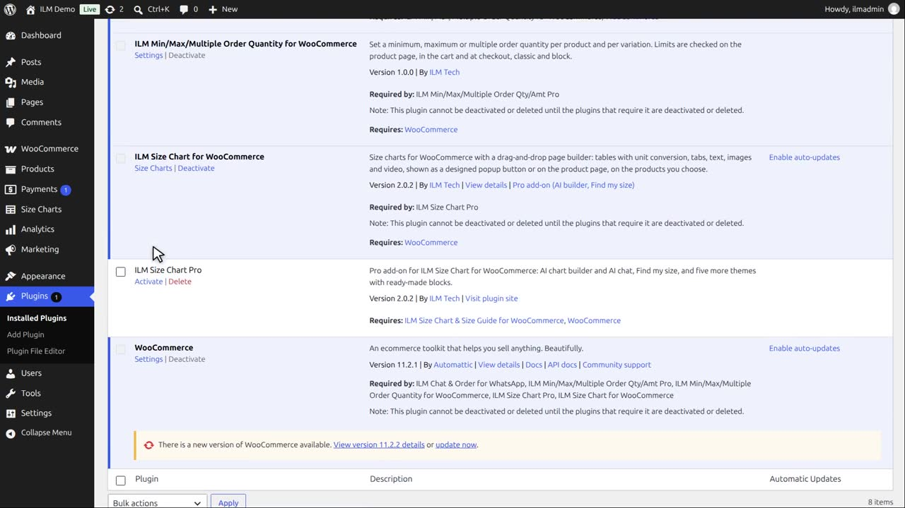
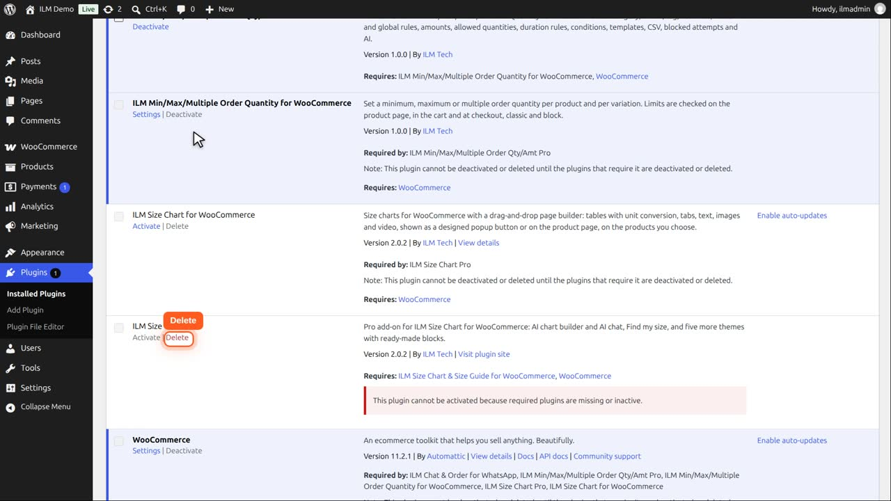
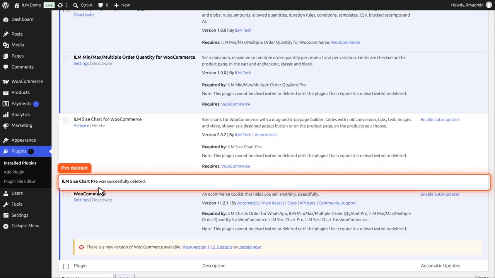

Then open Plugins. Start with the Pro add-on.

Click Deactivate. Pro is off, and your charts stay as they are. Deactivate only, if you just want to switch it off for a while.

Deactivate ILM Size Chart too. The shop no longer shows any size chart, but nothing is deleted yet.

Delete removes a plugin with its files. Delete the Pro add-on first: WordPress keeps ILM Size Chart until the add-on that needs it is gone.

Click Delete and confirm. The Pro add-on is deleted.
